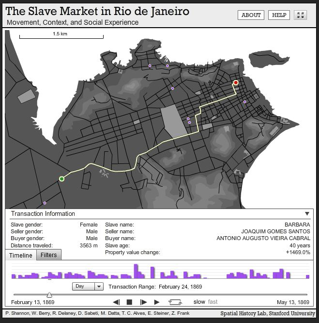
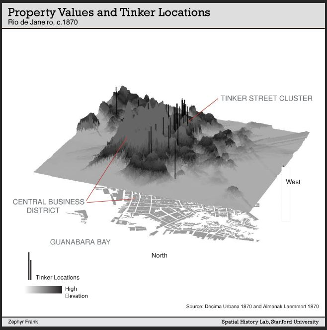

On Friday I had the opportunity to sit in on Zephyr Frank’s presentation for the Virtual Cities/Digital Histories symposium. His work, Terrain of History: Spatial History of Rio de Janeiro, 1840s-1930s, continues to produce beautiful visualizations and analyses.

An interactive map that displays the changes in home and status of slaves in Rio.

Property value with tinker location in Rio c. 1870